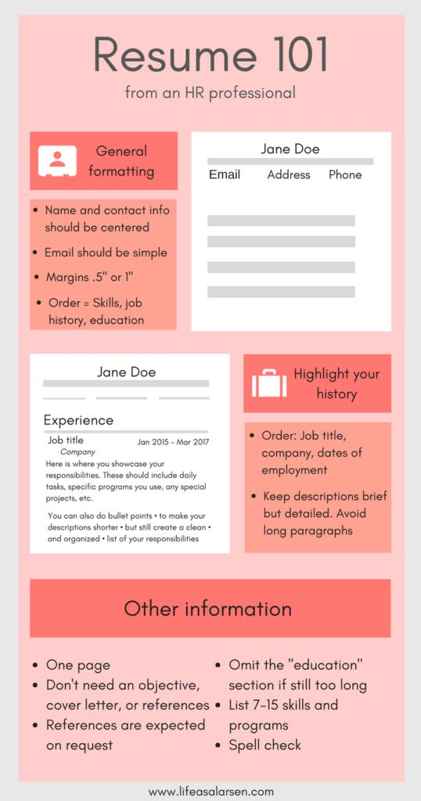

Checklist
Even if you’re someone who’s confident in putting together a job application, it’s still incredibly easy to miss something. To make sure this doesn’t happen use a quick CV checklist to help you to make sure you’ve not missed anything.
If you can tick off all of these points then you’re good to go!
- Review all your contact information, and make sure they are up to date.
- The employer has been addressed and the employer details mentioned are correct.
- The resume looks good and is well formatted.
- There are no typo and grammatical mistakes in the CV.
- The keywords have been highlighted.
- There is no irrelevant information included in the resume.
- The CV doesn’t exceed two pages.
- There should be no expected salary.
Building a strong resume
The right resume format will grab the hiring manager’s attention immediately and make it clear that you’re the best candidate for the job while deemphasizing aspects of your career that you’d prefer not to highlight.
https://www.thebalancecareers.com/resume-formats-with-examples-and-formatting-tips-2063591| Chronological. Best if: | Functional. Best if: | Hybrid. Best if: |
|---|---|---|
| You're applying for a job in your current field or industry. | You want to change careers | You're a mid-career professional or higher. |
| Your work experience and skill set are intimately linked. | You have large work gaps that you want to cover up. | You're an expert in your field. |
| You're an entry-level candidate or a student with some work experience. | You're applying for a job where the skill requirements are emphasized more than work experience. | You're applying for a job that requires a lot of technical skills and expertize. |
Here is a list of steps, you must follow to write the CV
Step 1 – Prepare for everything. Collect all the important documents, your certificates, your achievements and put it in one place. Also make a list of all the things that you want to add in your resume. Doing this will save a lot of time.
Step 2 – Write the header. List all your contact details and your name in bold.
Never write “Resume” on the top.
Step 3 – Plan your objective and write it. Read what the company seeks to achieve in the next five years. List your personal objectives for the next five years. After this match the two and list all the points that are common to both the lists. Always include the position and the function you desire.
For example, “Senior Web Developer in a Software Development Firm” is a good objective.
Step 4 – For the next part, list your educational qualifications. Include specific grades, marks, scholarships, and all your achievements. Convey to the employer that you have more than the basic qualification required for the job. Write the qualifications in a reverse chronological order (the latest on the top). You can also have the education section in a tabular form.
Step 5 – This step is the game changer. Design your experience section. Add all your projects and any sidekicks that you have been a part of. Any internships or volunteer activities, even the events that you organized in your college, should be included. Let the employer know that you have worked before, you are not new in this field. Also mention the time period, and provide a brief description about each project.
Step 6 – The next step is to add skills in your resume. Soft skills and hard skills should be differentiated. The purpose of soft skills is to showcase your personal capability whereas the hard skills depict the occupational skills you have to perform the desired job. Both must be exclusive of each other. Always mention these skills in bullet points.
Step 7– Add the finishing touches. Make sure that the font size is not more than 12, and the resume doesn’t exceed 2 pages. Also make sure that the resume is well formatted. Look for any grammatical errors. And the finally, save a .PDF format of your resume after naming it right. Always include your name and the word “resume”, in the name of the file.